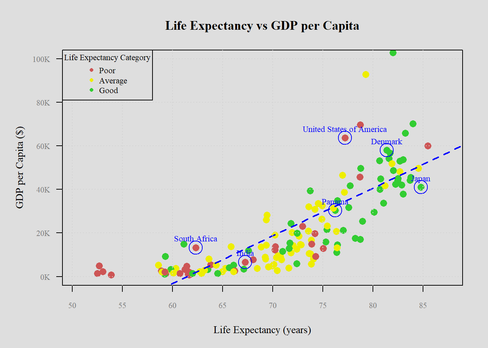
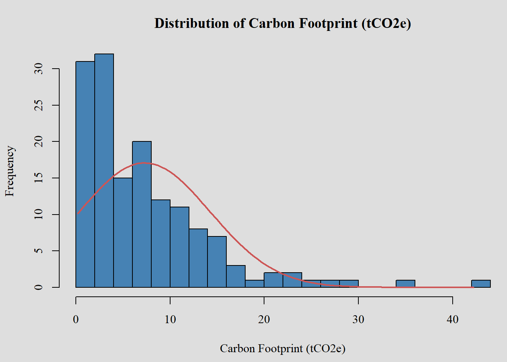
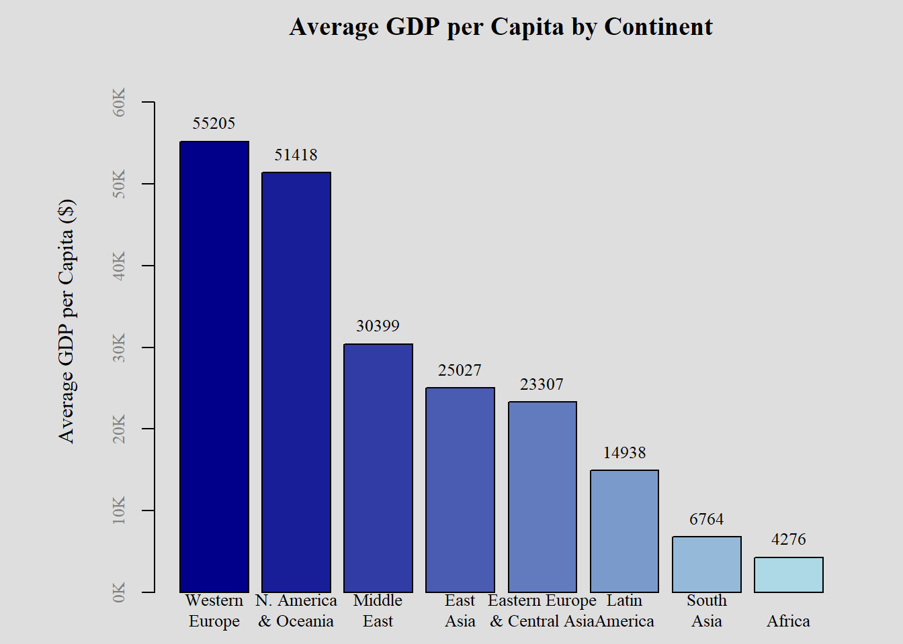
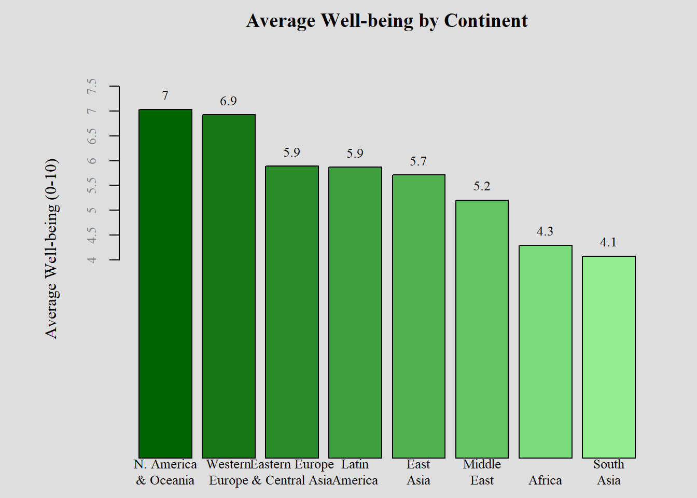
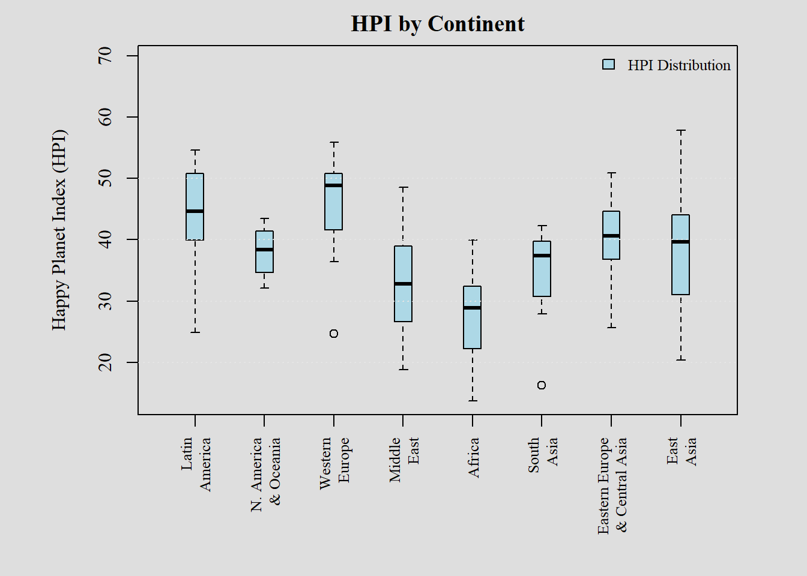
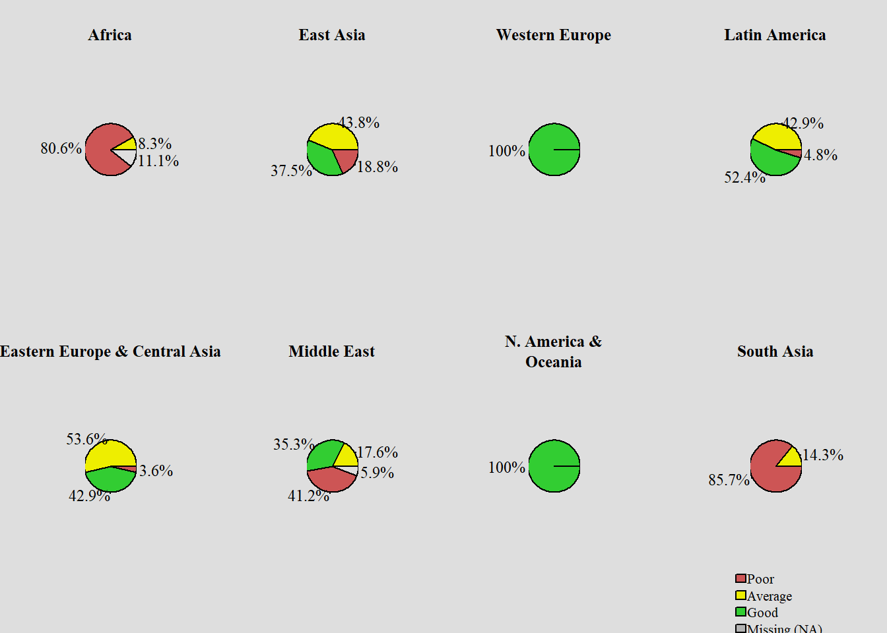

knitr::opts_chunk$set(warning = FALSE)Choosing the Best Graphic
Graphing HPI Across Nations

The Happy Planet Index (HPI) is an innovative measure that combines three key indicators to assess how effectively countries use environmental resources to support long, happy lives for their citizens:
Wellbeing: This metric reflects how satisfied residents of each country are with their lives, measured on a scale from zero to ten. The data is sourced from the Gallup World Poll.
Life Expectancy: This measures the average number of years a person can expect to live in each country, based on statistics provided by the United Nations Development Programme (UNDP).
Carbon Footprint: This metric estimates the per capita greenhouse gas emissions associated with a country’s consumption and economic activities.
The data is drawn from the World Inequality Database and the Global Carbon Atlas, supplemented by the EORA Global Supply Chain Database. It accounts for both direct emissions (e.g., energy consumption within the country) and emissions generated during the production of goods and services consumed within the country, irrespective of where they are produced. This includes emissions from individual consumption, government activities, and business investments.
Data Cleaning
The dataset used is represents the year 2021 and is sourced from the Happy Planet Index.
library(readxl)
library(dplyr)
Attaching package: 'dplyr'The following objects are masked from 'package:stats':
filter, lagThe following objects are masked from 'package:base':
intersect, setdiff, setequal, unionhappyplanetdf <- read_excel("C:/Users/hirel/OneDrive/Documents/SDAR - FW23/Methods of Data Collection/quartogit/HPI_2024_public_dataset.xlsx",
sheet = "1. All countries")New names:
• `` -> `...1`
• `` -> `...3`
• `` -> `...4`
• `` -> `...5`
• `` -> `...6`
• `` -> `...7`
• `` -> `...8`
• `` -> `...9`
• `` -> `...10`
• `` -> `...11`
• `` -> `...12`happyplanetdf <- happyplanetdf[-c(1:7), ] # Redundant rows
happyplanetdf <- happyplanetdf[ , -4] # Redundant Column
colnames(happyplanetdf) <- as.character(unlist(happyplanetdf[1,]))
happyplanetdf <- happyplanetdf[-1, ]
colnames(happyplanetdf) [1] "HPI rank" "Country"
[3] "ISO" "Continent"
[5] "Population (thousands)" "Life Expectancy (years)"
[7] "Ladder of life (Wellbeing) (0-10)" "Carbon Footprint (tCO2e)"
[9] "HPI" "CO2 threshold for year (tCO2e)"
[11] "GDP per capita ($)" Above, we read in the data and remove redundant rows in preparation of testing various graphical representations. colnames shows you how all columns are labelled.
Next, we transform the column data to be easily analyzed in Rstudio according to its data type.
# Convert columns in happyplanetdf
happyplanetdf <- happyplanetdf %>%
mutate(
Country = as.factor(Country), # Nominal categorical
ISO = as.factor(ISO), # Nominal categorical
`HPI rank` = factor(`HPI rank`, ordered = TRUE), # Ordinal categorical
Continent = as.factor(Continent), # Nominal categorical
`Population (thousands)` = as.numeric(`Population (thousands)`), # Continuous numerical
`Life Expectancy (years)` = as.numeric(`Life Expectancy (years)`), # Continuous numerical
`Ladder of life (Wellbeing) (0-10)` = as.numeric(`Ladder of life (Wellbeing) (0-10)`), # Continuous numerical
HPI = as.numeric(HPI), # Continuous numerical
`CO2 threshold for year (tCO2e)` = as.numeric(`CO2 threshold for year (tCO2e)`), # Continuous numerical
`Carbon Footprint (tCO2e)` = as.numeric(`Carbon Footprint (tCO2e)`), # Continuous numerical
`GDP per capita ($)` = as.numeric(`GDP per capita ($)`) # Continuous numerical
)Some data in the original file was not read in from the xl file. Thus, I recreated them to categorize each country’s Life Expectancy, Wellbeing, and Carbon Footprint into three labels: Poor, Average, and Good. This will be useful for our graphics later.
# Categorize Life Expectancy, Wellbeing, and Carbon Footprint
happyplanetdf <- happyplanetdf %>%
# Categorize Life Expectancy
mutate(Life_Expectancy_Category = case_when(
`Life Expectancy (years)` <= 65.0 ~ "Poor",
`Life Expectancy (years)` > 65.0 & `Life Expectancy (years)` <= 75.0 ~ "Average",
`Life Expectancy (years)` > 75.0 ~ "Good",
TRUE ~ NA_character_ # For missing values, set NA
)) %>%
# Categorize Wellbeing
mutate(Wellbeing_Category = case_when(
`Ladder of life (Wellbeing) (0-10)` < 5.0 ~ "Poor",
`Ladder of life (Wellbeing) (0-10)` >= 5.1 & `Ladder of life (Wellbeing) (0-10)` < 6.0 ~ "Average",
`Ladder of life (Wellbeing) (0-10)` >= 6.0 ~ "Good",
TRUE ~ NA_character_ # For missing values, set NA
)) %>%
# Categorize Carbon Footprint
mutate(Carbon_Footprint_Category = case_when(
`Carbon Footprint (tCO2e)` >= 6.36 ~ "Poor",
`Carbon Footprint (tCO2e)` <= 6.35 & `Carbon Footprint (tCO2e)` >= 3.19 ~ "Average",
`Carbon Footprint (tCO2e)` <= 3.18 ~ "Good",
TRUE ~ NA_character_ # For missing values, set NA
))
# View the updated dataset with new categorical columns
head(happyplanetdf)# A tibble: 6 × 14
`HPI rank` Country ISO Continent `Population (thousands)`
<ord> <fct> <fct> <fct> <dbl>
1 <NA> Burundi BDI 5 12551.
2 <NA> Sudan SDN 5 45657.
3 1 Vanuatu VUT 8 319.
4 2 Sweden SWE 3 10467.
5 3 El Salvador SLV 1 6314.
6 4 Costa Rica CRI 1 5154.
# ℹ 9 more variables: `Life Expectancy (years)` <dbl>,
# `Ladder of life (Wellbeing) (0-10)` <dbl>,
# `Carbon Footprint (tCO2e)` <dbl>, HPI <dbl>,
# `CO2 threshold for year (tCO2e)` <dbl>, `GDP per capita ($)` <dbl>,
# Life_Expectancy_Category <chr>, Wellbeing_Category <chr>,
# Carbon_Footprint_Category <chr>High-Level Plot
Graphing Life Expectancy vs GDP per Capita
One important insight with consensus among social scientists is the relationship between wealth and life expectancy. Below I test this relationship with the variables of Life Expectancy and GDP per capita from HPI’s dataset to exhibit the utility of plots. Plots are useful to display a relationship between two or more variables. I decided to label a handful of observations from different global regions that represent different cultures and governing styles to provoke thinking in the reader.
None of the text font of the graphic is the default. In choosing Times New Roman font, it will serve a more universal audience of English readers. I chose the colors of the points in a specific manner to intuitively teach the readers about where the average life expectancy of each country falls on a scale of poor to average to good. I chose not to use the exact shades of red, yellow, and green and instead chose lighter shades of the same. The background of the graphic is a light shade of grey. All colors chosen enhances the readability and is more inviting to the eye than the more extreme pigments the graphic would otherwise default to. No matter the lighting available to a reader using a screen, the colors will not add to eye strain.
I chose to add padding to the margins to help the reader’s eye to center the data and to promote more focus in the reader. I customized the starting point scale of the x-axis in order to center the data points in the graph and remove excess space that served no purpose. I customized the y-axis tick marks from technical terms to layman’s terms to make it easier to interpret for a wider range of people. Doing so changed the GDP units of measurements like 0e+00 to 0K (in US dollars).
I fit a linear regression model to superimpose a trend line on the graph. This emphasizes the positive linear relationship so that the reader does not have to deduce this by interpreting the shape of the points. Normally, I would refrain from placing the legend inside the graph however, there was ample redundant space in the top-left side to accommodate it without cluttering the data.
windowsFonts()$serif
[1] "TT Times New Roman"
$sans
[1] "TT Arial"
$mono
[1] "TT Courier New"# Registering and using a font:
windowsFonts(Times = windowsFont("Times New Roman"))
# Set the background color of the entire plot area to gray
par(bg = "gray87")
par(family = "Times")
# Create the Life Expectancy Category column if not already created
happyplanetdf <- happyplanetdf %>%
mutate(Life_Expectancy_Category = case_when(
`Life Expectancy (years)` <= 65.0 ~ "Poor",
`Life Expectancy (years)` > 65.0 & `Life Expectancy (years)` <= 75.0 ~ "Average",
`Life Expectancy (years)` > 75.0 ~ "Good",
TRUE ~ NA_character_
))
# Define the color map for the Life Expectancy categories
color_map <- c("Poor" = "indianred3", "Average" = "yellow2", "Good" = "limegreen")
# Map the colors to the Life Expectancy categories
point_colors <- color_map[happyplanetdf$Life_Expectancy_Category]
# Extract the relevant columns and remove rows with NA values in x or y
cleaned_data <- happyplanetdf %>%
filter(!is.na(`Life Expectancy (years)`), !is.na(`GDP per capita ($)`))
# Assign cleaned columns to variables
x <- cleaned_data$`Life Expectancy (years)` # Life Expectancy (years) as x-axis
y <- cleaned_data$`GDP per capita ($)` # GDP per capita ($) as y-axis
# Calculate appropriate x-axis limits based on data
x_min <- min(x) - 2 # Add padding to the minimum value
x_max <- max(x) + 2 # Add padding to the maximum value
# Set label orientation, margins, and text size
par(las=1, mar=c(5, 5, 4, 2), cex=.9)
# Create a customized scatter plot with custom x and y axis ticks
plot(x, y,
xlab = "Life Expectancy (years)",
ylab = "GDP per Capita ($)",
main = "Life Expectancy vs GDP per Capita",
pch = 16, col = point_colors, cex=1.5,
xlim=c(x_min, x_max), ylim=c(0, 100000), # Custom limits for x and y axes
xaxt='n', yaxt='n') # Suppress default axes
# Add custom x and y axes with specific tick marks
axis(1, at=seq(floor(x_min), ceiling(x_max), by=5), col.axis="gray50", cex.axis=0.8)
# Create custom labels for the y-axis using "K" for thousands
y_ticks <- seq(0, 100000, by=20000)
y_labels <- paste0(y_ticks / 1000, "K") # Convert to 'K' format (e.g., 20K, 40K)
# Add the custom y-axis with the new labels
axis(2, at=y_ticks, labels=y_labels, col.axis="gray50", cex.axis=0.8)
# Add a trend line using linear regression
fit <- lm(y ~ x) # Fit a linear model
abline(fit, col="blue", lwd=2, lty=2) # Add the regression line
# Add custom grid lines for better visualization
abline(h=y_ticks, col="lightgray", lty=3)
abline(v=seq(floor(x_min), ceiling(x_max), by=5), col="lightgray", lty=3)
# List of countries to highlight
highlight_countries <- c("United States of America", "Denmark", "Japan", "Panama", "South Africa", "India")
# Extract rows for those countries
highlight_data <- cleaned_data %>%
filter(Country %in% highlight_countries)
# Add circles around the selected countries and annotate them
symbols(highlight_data$`Life Expectancy (years)`, highlight_data$`GDP per capita ($)`,
circles=rep(2, nrow(highlight_data)), inches=0.1, add=TRUE, fg="blue")
# Add text annotations for the highlighted countries
text(highlight_data$`Life Expectancy (years)`, highlight_data$`GDP per capita ($)`,
labels=highlight_data$Country, pos=3, col="blue", cex=0.8)
# Add a legend to explain the colors of the points
legend("topleft", legend = names(color_map), col = color_map, pch = 16, cex = 0.8, title = "Life Expectancy Category")
# Reset graphical parameters to default
par(mar=c(5.1, 4.1, 4.1, 2.1), bg="white") # Reset background color after plottingHistogram: Displaying Carbon Footprints
CO2 emissions refer to the release of carbon dioxide (CO2) into the atmosphere, mainly from burning fossil fuels like coal, oil, and gas. CO2 is a greenhouse gas, meaning it traps heat in the Earth’s atmosphere, contributing to global warming. Since CO2 emissions may not be intuitive to understand for the layman as the well-being or life expectancy features, I chose to inspect it as a uni variate. Histograms show the distributions and central tendency of one numerical variable.
Once more, I chose to make the background light grey instead of the defaulted white to be easier on the eye. With the same logic, I chose lighter shades of the primary colors blue and red. For the same reasons as the previous graph, we are working with Times New Roman throughout the graphic. I overlay a normal distribution curve to clearly indicate the shape of the distribution. Lastly, I change the defaulted y axis scale to be a count of observations in each bin for better interpretation of data.
The rightward skew of the distribution shows the tendency of most countries to fall in the range of 0 to 10 units of tCO2e. Fewer countries expend more than 20. Largest Emitters: China, the United States, and India are currently the largest CO2 emitters. However, per capita emissions are higher in developed countries like the U.S., Canada, and Australia.Over time, developed nations have contributed the most to historical emissions, making them key players in global climate efforts.
# Assuming happyplanetdf is already loaded and "Carbon Footprint (tCO2e)" is numeric
carbon_footprint <- happyplanetdf$`Carbon Footprint (tCO2e)`
# Remove any NA values from the Carbon Footprint data
carbon_footprint <- na.omit(carbon_footprint)
# Set margins and create the histogram with counts
par(bg = "gray87")
par(mar = c(4.5, 4.1, 3.1, 0), family = "Times")
# Create the histogram and store the result
hist_data <- hist(
carbon_footprint,
breaks = 20,
col = "steelblue",
freq = TRUE, # Set to TRUE to display counts
xlab = "Carbon Footprint (tCO2e)",
main = "Distribution of Carbon Footprint (tCO2e)"
)
# Overlay a normal distribution curve adjusted for counts
x_seq <- seq(min(carbon_footprint), max(carbon_footprint), length.out = 100)
dn <- dnorm(x_seq, mean = mean(carbon_footprint), sd = sd(carbon_footprint))
# Adjust the density values to match the count scale of the histogram
n <- length(carbon_footprint) # Total number of observations
bin_width <- hist_data$breaks[2] - hist_data$breaks[1] # Width of each bin
dn_counts <- dn * n * bin_width # Scale densities to counts
# Overlay the adjusted normal curve
lines(x_seq, dn_counts, lwd = 2, col = "indianred3")
# Reset margins to default
par(mar = c(5.1, 4.1, 4.1, 2.1))Barplots of Continental GDP and Well-Being
Barplots are often used to present summary statistics like means, medians, or totals. For instance, a barplot can show the average test scores for different schools, or the total sales for different products. They are useful for summarizing aggregated data where individual data points are grouped and the totals or averages are shown. Barplots make it easy to compare different categories or groups. Each bar represents a category, and the height (or length, in the case of horizontal barplots) shows the value of a specific variable for that category. With a glance, you can see which categories have higher or lower values, making it simple to identify trends or outliers. A barplot of GDP per capita by continent highlights economic differences across regions. For instance, wealthier regions like Western Europe and North America & Oceania may have significantly higher GDP per capita compared to regions like Africa or South Asia. Higher GDP often correlates with advanced industrialization and better resource management, while lower GDP might reflect reliance on agriculture, limited industrial growth, or socio-political challenges.
I chose to list the GDP’s and Well-being scores by continent in descending order to enhance the message to the reader about where each one stands. This is the same reason I chose to incorporate gradients of blue and green, emphasizing the point that GDP’s influence might have on well-being. New labels were assigned to the bars as the data originally assigned numbers to each continent. To be legible, each word in the continent’s label had to be given its own line to prevent overlapping. For continuity from previous graphs, I added the “K” to represent units of GDP per capita in USD on the scale. I had to add much more space to the left side margins as they were blocking the y axis label from view and cluttering the data too much to the left side.
A barplot of well-being (which often measures life satisfaction, happiness, or general quality of life) shows how people feel about their lives on average. Even continents with lower GDP per capita may score higher on well-being, suggesting that wealth is not the sole determinant of happiness. High well-being scores in regions like Latin America or Western Europe might be linked to strong social safety nets, access to healthcare, education, and social cohesion, regardless of wealth levels. Well-being is often influenced by cultural values, family structures, work-life balance, and environmental quality, meaning that regions with modest GDP may still have high well-being due to factors such as strong community ties, lower stress, or natural beauty.
Barplots comparing GDP per capita and well-being across continents can show that economic wealth (higher GDP per capita) does not always translate into better well-being. For example, Western Europe might have both high GDP and well-being, while regions like Latin America may have moderate GDP but high well-being. Some regions with high GDP, such as North America, might show diminishing returns on well-being after a certain level of wealth, indicating that beyond basic needs, wealth alone may not significantly boost happiness. onversely, regions with lower GDP (e.g., Africa or South Asia) may also show lower well-being, pointing to the role of poverty in reducing overall life satisfaction due to factors like poor healthcare, education, and job security.
# Barplot 1: Avg GDP per Continent
# Custom continent names with line breaks for each full word
continent_labels <- c(
"1" = "Latin\nAmerica",
"2" = "N. America\n& Oceania",
"3" = "Western\nEurope",
"4" = "Middle\nEast",
"5" = "Africa",
"6" = "South\nAsia",
"7" = "Eastern Europe\n& Central Asia",
"8" = "East\nAsia"
)
# Calculate the average GDP per capita by continent
avg_gdp_by_continent <- happyplanetdf %>%
group_by(Continent) %>%
summarise(avg_gdp = mean(`GDP per capita ($)`, na.rm = TRUE)) %>%
arrange(desc(avg_gdp)) # Optional: Sort by average GDP
# Create a color gradient from dark blue (for highest GDP) to light blue (for lowest GDP)
blue_gradient <- colorRampPalette(c("darkblue", "lightblue"))(nrow(avg_gdp_by_continent))
# Set graphical parameters (margins)
par(bg = "gray87")
par(mar=c(2, 6, 2, 2.1), family = "Times")
# Create the barplot and suppress default y-axis labels (yaxt = "n")
midpts <- barplot(avg_gdp_by_continent$avg_gdp,
col=blue_gradient, # Apply the blue gradient to the bars
names=rep("", nrow(avg_gdp_by_continent)), # Suppress axis names initially
ylim = c(0, max(avg_gdp_by_continent$avg_gdp) * 1.2), # Extend y-axis a bit for labels
main = "Average GDP per Capita by Continent",
ylab = "Average GDP per Capita ($)", # Add y-axis label here
border = "black", yaxt = "n") # Suppress default y-axis
# Add custom y-axis with "K" notation for tick labels
y_ticks <- pretty(avg_gdp_by_continent$avg_gdp) # Generate "pretty" tick values
y_labels <- paste0(y_ticks / 1000, "K") # Convert to 'K' format (e.g., 20K, 40K)
axis(2, at = y_ticks, labels = y_labels, col.axis = "gray50", cex.axis = 0.8)
# Add custom labels with line breaks for better readability
mtext(continent_labels[avg_gdp_by_continent$Continent], at=midpts, side=1, line=0.5, cex=0.8)
# Add text annotations on the bars (average GDP values)
text(midpts, avg_gdp_by_continent$avg_gdp,
labels = round(avg_gdp_by_continent$avg_gdp, 0), # Display rounded GDP values
pos = 3, # Place the text above the bars
cex = 0.8, col = "black")
# Reset graphical parameters to default after plotting
par(mar=c(5.1, 4.1, 4.1, 2.1))
# Barplot 2: Avg Wellbeing Per Continent
# Calculate the average well-being by continent
avg_wellbeing_by_continent <- happyplanetdf %>%
group_by(Continent) %>%
summarise(avg_wellbeing = mean(`Ladder of life (Wellbeing) (0-10)`, na.rm = TRUE)) %>%
arrange(desc(avg_wellbeing)) # Optional: Sort by average well-being
# Create a color gradient from dark green (for highest well-being) to light green (for lowest well-being)
green_gradient <- colorRampPalette(c("darkgreen", "lightgreen"))(nrow(avg_wellbeing_by_continent))
# Set graphical parameters (margins) and background
par(bg = "gray87")
par(mar=c(2, 6, 2, 2.1), family = "Times")
# Create the barplot and suppress default y-axis labels (yaxt = "n")
midpts <- barplot(avg_wellbeing_by_continent$avg_wellbeing,
col=green_gradient, # Apply the green gradient to the bars
names=rep("", nrow(avg_wellbeing_by_continent)), # Suppress axis names initially
ylim = c(0, max(avg_wellbeing_by_continent$avg_wellbeing) * 1.2), # Extend y-axis a bit for labels
main = "Average Well-being by Continent",
ylab = "Average Well-being (0-10)", # Add y-axis label here
border = "black", yaxt = "n") # Suppress default y-axis
# Add custom y-axis with tick labels for well-being scores
y_ticks <- pretty(avg_wellbeing_by_continent$avg_wellbeing) # Generate "pretty" tick values
axis(2, at = y_ticks, labels = y_ticks, col.axis = "gray50", cex.axis = 0.8)
# Add custom labels with line breaks for better readability
mtext(continent_labels[avg_wellbeing_by_continent$Continent], at=midpts, side=1, line=0.5, cex=0.8)
# Add text annotations on the bars (average well-being values)
text(midpts, avg_wellbeing_by_continent$avg_wellbeing,
labels = round(avg_wellbeing_by_continent$avg_wellbeing, 1), # Display rounded well-being values
pos = 3, # Place the text above the bars
cex = 0.8, col = "black")
# Reset graphical parameters to default after plotting
par(mar=c(5.1, 4.1, 4.1, 2.1))Together, these barplots can highlight whether wealthier regions are enjoying higher life satisfaction, or whether happiness can be achieved independently of wealth. They help in understanding global disparities in wealth and well-being, offering a broader perspective on human development and how various factors—beyond just economic growth—contribute to a region’s success and the quality of life of its inhabitants.
Boxplot
Boxplots (also known as box-and-whisker plots) are highly useful data visualization tools that summarize a dataset’s distribution in a concise and easy-to-interpret way. Five-Number Summary: Boxplots visually represent the five-number summary of a dataset:
Minimum: The smallest data point, excluding outliers.
First Quartile (Q1): The 25th percentile, where 25% of the data lies below this value.
Median (Q2): The middle value, where 50% of the data is below and 50% is above.
Third Quartile (Q3): The 75th percentile, where 75% of the data is below this value.
Maximum: The largest data point, excluding outliers.
This helps give a quick, visual summary of the central tendency and spread of the data.
Boxplots allow you to quickly see how the HPI varies across different continents. You can easily compare which regions have a higher or lower HPI, and whether their values are spread out or tightly clustered. The median line in each boxplot shows the central tendency of the HPI for each continent, while the size of the box (interquartile range) shows how much the HPI values vary within that region. he boxplot can easily identify outliers (represented by points outside the whiskers). For example, if a country in a continent has a significantly higher or lower HPI than others in that region, it will stand out. If one region shows more variability in its HPI scores than another, it could indicate that countries within that region have differing levels of success in achieving both happiness and sustainability.
# Set graphical parameters and margins
par(bg = "gray87")
par(mar=c(7, 6, 2, 3), family = "Times") # Adjust margins
# Create a boxplot of HPI by Continent
boxplot(HPI ~ Continent, data = happyplanetdf,
boxwex = 0.25, # Box width
col = "lightblue", # Box color
xlab = "", # Empty x-axis label
ylab = "Happy Planet Index (HPI)", # Y-axis label
ylim = c(min(happyplanetdf$HPI, na.rm = TRUE), max(happyplanetdf$HPI, na.rm = TRUE) * 1.2), # Adjust y-axis limits
xaxt = "n") # Suppress default x-axis labels
# Add custom x-axis with continent names
axis(1, at = 1:8, labels = continent_labels, las=2, cex.axis = 0.8) # Rotating labels for readability
# Add a main title
title(main = "HPI by Continent")
# Add custom grid lines
abline(h=seq(0, max(happyplanetdf$HPI, na.rm = TRUE), by=10), col="gray90", lty=3) # Horizontal grid lines
# Add a custom legend
legend("topright", legend = "HPI Distribution", fill = "lightblue", bty = "n", cex = 0.8)
# Reset graphical parameters to default after plotting
par(mar=c(5.1, 4.1, 4.1, 2.1))Pie Charts of Well-Being Across Continents
Pie charts are a popular tool for visualizing data, particularly for displaying parts of a whole in a clear and easily understandable way. They are widely used in presentations and reports when the goal is to communicate simple proportions or percentages. Pie charts are most effective when showing how different categories contribute to a total. Each “slice” represents a proportion of the whole, making it easy to see which categories are dominant or which ones have a smaller share. Pie charts are useful for representing categorical data, such as market share, budget allocations, or survey results. Each slice represents a different category, and the size of the slice corresponds to its proportion within the dataset. Pie charts are particularly useful when there are one or two dominant categories that represent the bulk of the data. When there are too many categories, pie charts become cluttered and hard to interpret. Bar charts or other visualizations are more appropriate for larger data sets.
For each continent, a pie chart highlights the distribution of wellbeing among its population. This makes it easy to see how the different wellbeing categories (Poor, Average, Good) contribute to the overall picture for that continent. The barplot showed how continents rank in terms of average wellbeing. For example, one can quickly see which continent has the highest average wellbeing and which one has the lowest. The pie chart focuses on how the wellbeing scores are divided among categories, making it useful for qualitative insights (how the population is distributed across wellbeing categories).
In the barplots, we observed that continents with higher GDP per capita (such as North America & Oceania and Western Europe) tend to have higher average wellbeing. The pie charts bear out a similar insight. Western Europe and North America & Oceania display a large proportion of “Good” wellbeing in their pie charts. This indicates that a substantial portion of their populations enjoys a high quality of life, which aligns with the economic advantages reflected in the GDP barplot. The barplots showed that continents like Africa and South Asia, which have lower average GDP per capita, also have lower average wellbeing scores. The pie charts reinforce this insight. These regions face challenges related to poverty, inadequate infrastructure, and limited access to essential services, which translate into lower levels of overall wellbeing.
The middle-income continents, such as Latin America, Eastern Europe & Central Asia, and parts of East Asia, are more mixed in their wellbeing outcomes, both in the barplots and in the pie charts.
# Calculate the percentages of Wellbeing categories for each continent
# Color map for the Wellbeing categories, including NA for missing data
color_map <- c("Poor" = "indianred3", "Average" = "yellow2", "Good" = "limegreen", "NA" = "gray70")
# Calculate the percentages of Wellbeing categories for each continent
wellbeing_pct <- happyplanetdf %>%
group_by(Continent, Wellbeing_Category) %>%
summarise(Count = n()) %>%
mutate(Percentage = round(Count / sum(Count) * 100, 1)) # Calculate percentages for each category`summarise()` has grouped output by 'Continent'. You can override using the
`.groups` argument.# Custom continent names with line breaks for each full word
continent_labels <- c(
"1" = "Latin America",
"2" = "N. America &\nOceania",
"3" = "Western Europe",
"4" = "Middle East",
"5" = "Africa",
"6" = "South Asia",
"7" = "Eastern Europe & Central Asia",
"8" = "East Asia"
)
# Set up graphical parameters for multiple plots in one pane
par(mfrow = c(2, 4), # 2 rows, 4 columns layout for 8 continents
mar = c(5, 5, 4, 5) + 0.1, # Adjust margins for larger pie charts
bg = "gray87", # Set the background to grey
family = "Times") # Set the font to Times New Roman
# Loop through each continent and create a pie chart for each
for (continent in unique(happyplanetdf$Continent)) {
# Subset the data for the current continent
continent_data <- subset(wellbeing_pct, Continent == continent)
# Pie chart data
pie_values <- continent_data$Percentage
pie_labels <- paste0(continent_data$Percentage, "%") # Add percentage labels
pie_colors <- color_map[continent_data$Wellbeing_Category]
# Create the pie chart
pie(pie_values,
labels = pie_labels,
col = pie_colors,
main = continent_labels[as.character(continent)], # Use custom continent labels
cex = 1.2, # Increase text size for percentages
radius = 1.1) # Adjust pie size to fit within the space
}
# Stay in the same plotting area and manually adjust the position of the legend
# Add a custom legend for Wellbeing categories, including NA
legend("bottom",
legend = c("Poor", "Average", "Good", "Missing (NA)"),
fill = c("indianred3", "yellow2", "limegreen", "gray70"),
bty = "n", # No border around the legend
cex = 1.0, # Adjust text size slightly smaller
x.intersp = 0.1, # Adjust spacing between boxes and text
inset = c(0, -0.6), # Move the legend down but keep within the plot area
horiz = F, # Arrange the legend horizontally
xpd = TRUE) # Allow drawing outside the plot area
# Reset graphical parameters to default after plotting
par(mfrow = c(1, 1)) # Reset to single plot mode